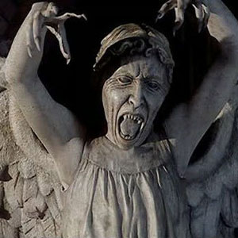

| Daleks |
| Cybermen |
| The Master |
| Lady Cassandra |
| Davros |
| Weeping Angels |
My Doctor Who Website
Weeping Angels
The Weeping Angels are an ancient race of aliens from the long running sci fi series Doctor Who. Steven Moffat, their creator, attributes their appeal to childhood games such as Grandmother's Footsteps and the notion that every statue is secretly a Weeping Angel.
Their usual mode of feeding is to send their victims back in time, which creates time energy to feed on. When they are not being observed by another being, they can move very quickly and silently, but when they are being observed, they become "quantum-locked", occupying a single position in space and becoming stone. In this state, they are frozen and difficult to destroy. They cannot suppress this reaction. If two Weeping Angels were to look at each other at the same time, they would be trapped in stone form until an outside force moves them apart. To prevent this, they often cover their eyes while moving, which makes them look as though they are weeping.